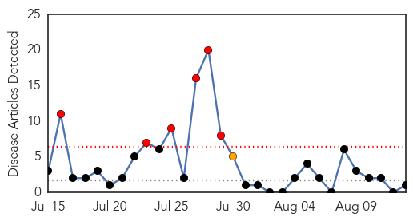
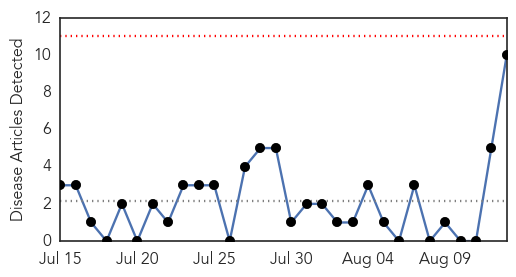

Hepatitis
30-Day Web Trend
6 alerts, 1 warnings

30-Day Twitter Trend
1 alerts, 0 warnings

Article Locations

Article Confidences
Top Articles:
Top Tweets:
-
No tweets found for Aug 13, 2014
Pertussis
30-Day Web Trend
0 alerts, 0 warnings

30-Day Twitter Trend
0 alerts, 0 warnings

Article Locations
Article Confidences

Top Articles:
- 0.857
- 2014 is record year for pertussis cases in San Diego County
- 0.770
- Dept. of Health: Adults need to get vaccinated, too
- 0.741
- Montclair Health Department Offering Vaccinations for Tweens and Teens - Barista Kids
- 0.727
- NY State Physicians and Public Health Officials Launch "IMMUNIZE NY"
- 0.688
- Md. requires new shots for kindergarten, 7th grade
- 0.678
- Idaho reports alarming rise in whooping cough cases
- 0.650
- Idaho Sees Alarming Rise In Whooping Cough Cases
- 0.603
- Three more vaccines required for Durham students
- 0.574
- Coeur d'Alene Press: Local News
- 0.569
- Whooping cough alert: Bathurst parents left to fend for themselves
Top Tweets:
-
No tweets found for Aug 13, 2014